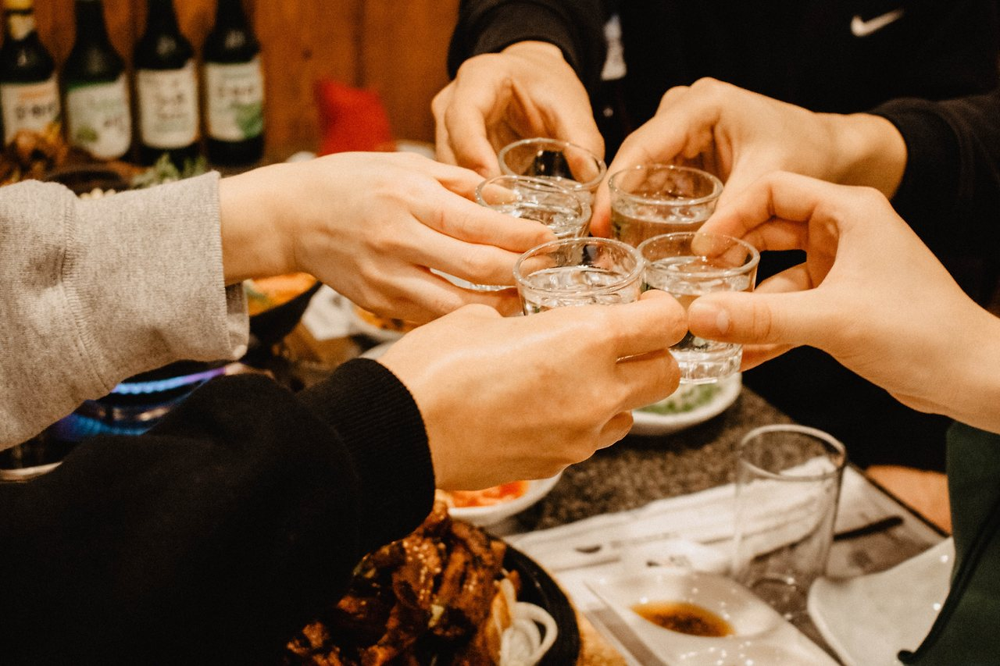

📂 매거진: 스타트업 리더의 기술
직업병
Nov 11. 2023

어제는 고등학교 동창과 25년 만에 술자리를 가졌습니다.
각기 다른 위치에서 세월을 살아왔지만 얼굴, 말 그리고 행동에서 예전의 고등학교 시절 모습이 보여서 신기해하며 술잔을 기울였습니다. 그런데 기분이 좋아서였는지, 취기가 올라서였는지, 친구들이 우리가 이제 나이를 꽤 먹었다고 얘기를 하니...
갑자기 제가 이 친구들을 모티베이션 시키는 코칭을 하기 시작하는 겁니다.
"야 늦지 않았어... 임마~ 이제 시작인 나이야... 어디 어디 창업자는 50대에 창업을 해서 글로벌 기업을 만들었어... (딸꾹;) 너희들 개인사업해라. 창업하면 좋아..."
친구들이 당황해하더니...
" 야~ 성희가 안 보던 사이에 얘기가 쎄졌다"
그 얘기에 아랑곳없이... 저는 또...
"야~ 해보니까 주도적으로 살 수 있어, 좋아서 그러는 거야. 임마~ 지금부터 1~2년 준비해서 꼭 해봐라.(딸꾹) 어떤 선배는... 이러이러하게 해서 잘 나간다라.(딸꾹)"
다음 날 아침... 그 뒤로 어떻게 헤어졌는지, 집에 왔는지는 어렴풋이 기억이 나는데... 제가 술자리에서 코칭을 했던 기억이 너무 또렷하게 나면서, '내가 왜 원치도 않는 친구들에게 뜬금없는 코칭을 했지?'라는 생각에 얼굴이 후끈 달아오르더군요. 심지어 그 친구는 30대 때 창업을 했다가 접었던 기억도 막 생각나고;;;
술이 좀 깬 후 그 친구에게 카톡이 왔길래, "야 어제는 내가 얘기가 과했던 거 같다. 혹시 실수한 거 있으면 이해해 줘라."라고 하니 친구는 "야~ 성희야~ 친구 사이에 그럴 수도 있지. 역시 친구는 친구인 게 25년 만에 봐도 편하게 얘기할 수 있어서 너무 좋더라."
'아~ 맘 넓은 친구를 둬서 다행이다.'라는 마음과 함께, 상대가 원하지 않는 상황에서의 코칭은 훈수나 자만처럼 보일 수도 있으니 조심해야겠다는 생각을 했습니다.
앞으로는 진짜 진짜 술자리던 어떤 자리던 상대가 원할 때만 직업병을 쓰겠습니다!!!